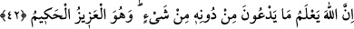
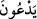
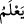
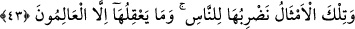

eşya yok olur. Tevhîd, sonradan ilave edilenleri (izâfet) çıkarmadır (iskat).
Bazı te’vil ehli de şöyle demiştir.
Cihânın mecazdan gayrı varlığı yoktur
Baştan başa onun durumu oyun ve eğlencedir
Fakir (Bursevî) der ki: İki bayram, iç (dâhilî) ve dış (haricî) nefse işâret olabilir.
Âriflerin, Hak ve Hakk’ın müşâhedesiyle beraber olmaları sebebiyle daha büyük bir
bayramları vardır. Örümcekler ise Hakk’ı müşâhede etmeksizin sadece zâhirî ibâdetlere
bağlı kalan âbidlere işâret eder. Helva yiyene göre pastırma yiyen nerededir?
42. Allah, onlar’ın kendisini bırakıp da hangi şeye yalvardıklarını şüphesiz bilir. O,
mutlak güç ve hikmet sâhibidir.
Bu âyetin başında: “Kâfirlere bir tehdid olarak de!..” sözü gizlidir. “Hangi şeye
yalvardıklarını şüphesiz bilir” cümlesindeki “mâ”, soru edatıdır ve “__WORD__ fiili ile
mansubtur. “__WORD__ (bilir)” fiili ise ona taalluk eder.
Âyetin mânâsı şöyledir: Kâfirlere bir tehdid olarak de ki: “Allah, onların kendisini
bırakıp da” put, yıldız, melek, cin vs. gibi “hangi şeye yalvardıklarını şüphesiz bilir.”
Bu, O’na gizli değildir. Küfürlerinden dolayı onları cezâlandıracaktır.
“O,” düşmanlarından intikam alma konusunda “mutlak güç ve” cezâda acele
etmemekte “hikmet sâhibidir.”
Kureyş’in câhil ve sefihleri: “Muhammed’in rabbi sinek, sivrisinek ve örümceği
temsil getirmekten hayâ etmiyor” diyor ve arkasından gülerek alay ediyorlardı. Bunun
üzerine Allah Teâlâ şöyle buyurdu:
43. İşte biz, bu temsilleri insanlar için getiriyoruz; fakat onları ancak bilenler
düşünüp anlayabilir.
“İşte biz, bu temsilleri” ve benzerlerini, Mekke halkı ve diğer “insanlar için
getiriyoruz; fakat onları ancak bilenler düşünüp anlayabilir.” Yâni onların
anlayışlarına uzak gelen şeyleri zihinlerine yaklaştırmak için beyân ediyoruz.
“Mesel” kelimesi, ikinci hâli birinci hâle benzetme mânâsına gelen yaygın söz
demektir.
el-Müfredat’ta der ki: “Darb-ı mesel” ifâdesi, ayarlamak için gümüş paraya (dirhem)
çekiç ile vurmaktan alınmıştır; başkasında eseri görülen bir şeyi zikretmek, örnekle